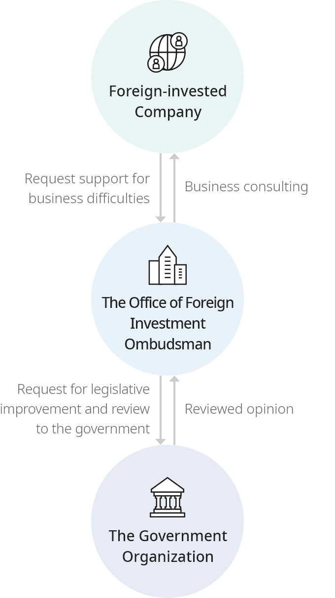
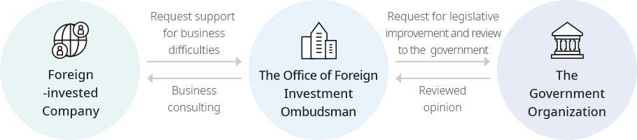

How to Apply
- Home
- Grievance Consultation
- How to Apply
Grievance Resolution Process


- Foreign-invested Company - Request support for business difficulties
- The Office of Foreign Investment Ombudsman - Request for legislative improvement and review to the government
- The Government Organization
- The Government Organization - Reviewed opinion
- The Office of Foreign Investment Ombudsman - Business consulting
- Foreign-invested Company
How to Apply
Area of Grievance Consulting
- Taxation / Customs, Trade / Finance/Foreign exchange / Labor disputes / Labor relations, HR / Sales, Distribution, Advertisement / Visa,Immigration / Plant site / Construction,Land / Electricity, Water supplies / Road,Transportation / Investment incentives / Investment procedures / Standard, Certification, Inspection / Environment / Intellectual property / R&D / Insurance, Welfare / Unfair treatment / Civil disputes / Living environment / Others
How to Apply
-
Go to [Apply for Grievance Consultation], and then you can apply online.
You can use the service quickly and conveniently after simple email verification. - Grievances received will be treated privately and will be used only for resolving difficulties.
-
Developments in your application can be found in [My Page], after entering the email address and password you used to filing the application.
Please note that applications made before November 2021 cannot be brought up.